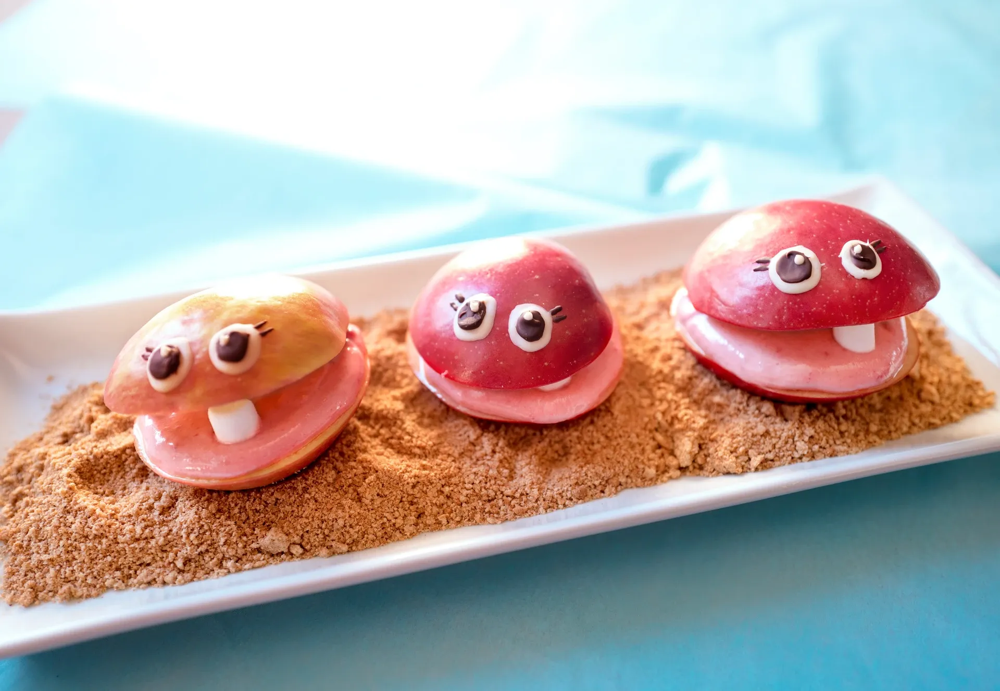

Muschelstrand mit Marshmallows

Muschelstrand mit Marshmallows
Der Muschelstrand mit Marshmallows ist ein fantasievolles Dessert für Kinder. Inspiriert von Strand und Meer entstehen kleine Apfel-Muscheln mit Marshmallow-Füllung. Das Dessert ist bunt, gesund und macht Kindern Freude beim Zubereiten und Servieren. Mit Keksbröseln als Sand und Schokolade als Dekoration wird aus einfachen Zutaten ein kreativer Strandteller.
Rezeptinformationen
Zubereitungszeit: 30 Minuten
Schwierigkeit: leicht
Portionen: 3–4 Kinderportionen
Zutaten
- 3 Äpfel
- 1 EL Zitronensaft
- 50 g Mascarpone
- 3 Mini-Marshmallows
- Weisse Kuvertüre
- Bitterkuvertüre
- 100 g Vollkorn-Butterkekse
Zubereitung
-
Apfel vorbereiten:
- Von jedem Apfel 2 dicke Scheiben (ca. 2 cm) abschneiden.
- Schnittflächen mit Zitronensaft einreiben, damit sie nicht braun werden.
-
Füllung:
- Mascarpone mit Kirschenmarmelade verrühren.
- Apfelscheiben mit der Mascarponecreme bestreichen und zusammensetzen.
- Je ein Mini-Marshmallow dazwischen legen. Mit Zahnstochern fixieren, falls nötig.
-
Schokoladendekoration:
- Weisse und Bitterkuvertüre getrennt schmelzen.
- Mit einem Zahnstocher kleine Augen oder Muster auf die oberen Apfelscheiben malen.
-
Sand vorbereiten:
- Vollkorn-Butterkekse fein zerbröseln und mit etwas Zimt vermischen.
- Auf einem Teller verteilen und die Apfel-Muscheln darauf anrichten.